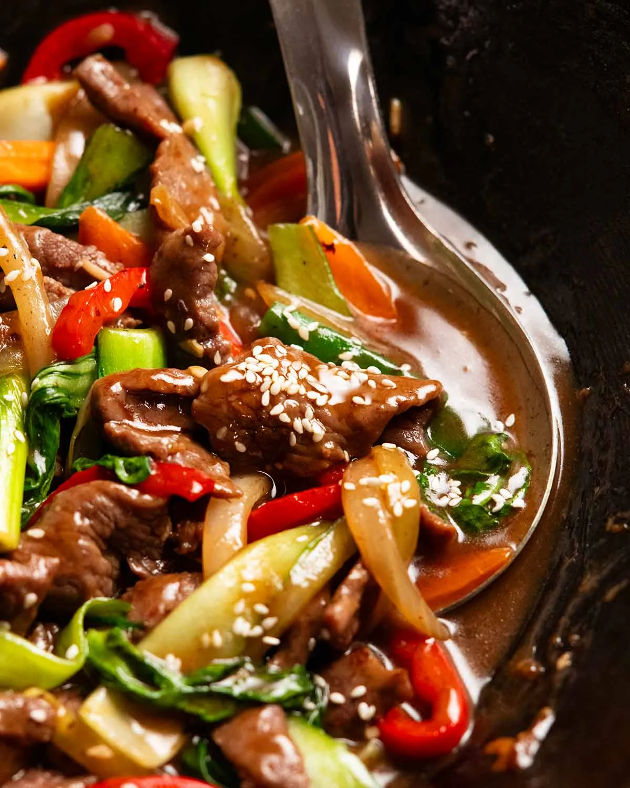

Preparation: 15 minutes · Cooking: 10 minutes · Serves: 2–3
Ingredients
- 1 lb sirloin steak, thinly sliced
- 2 cups broccoli florets
- 1 red bell pepper, sliced
- 2 tablespoons soy sauce
- 1 tablespoon sesame oil
- 1 tablespoon cornstarch
- 2 cloves garlic, minced
- 1 teaspoon fresh ginger, grated
Instructions
- Whisk together soy sauce, sesame oil, and cornstarch in a small bowl to make the sauce.
- Heat a skillet or wok over high heat with a tablespoon of oil.
- Add thinly sliced beef and stir-fry for 3-4 minutes until browned, then remove from pan.
- Add broccoli, red bell pepper, garlic, and ginger to the hot pan and stir-fry for 3 minutes.
- Return the beef to the pan and pour in the sauce mixture.
- Cook for another 1-2 minutes until the sauce thickens and coats everything evenly.
A quick and savory beef stir-fry packed with fresh vegetables and a rich soy-sesame sauce.